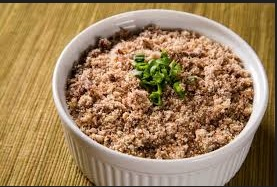
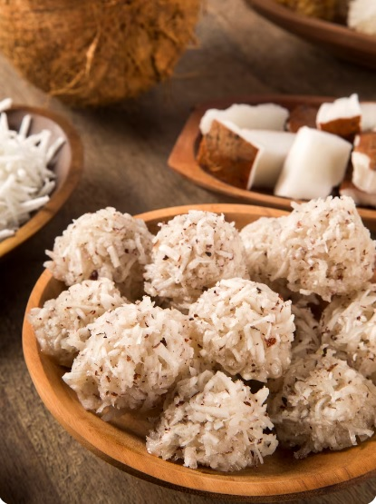
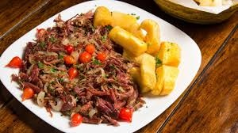
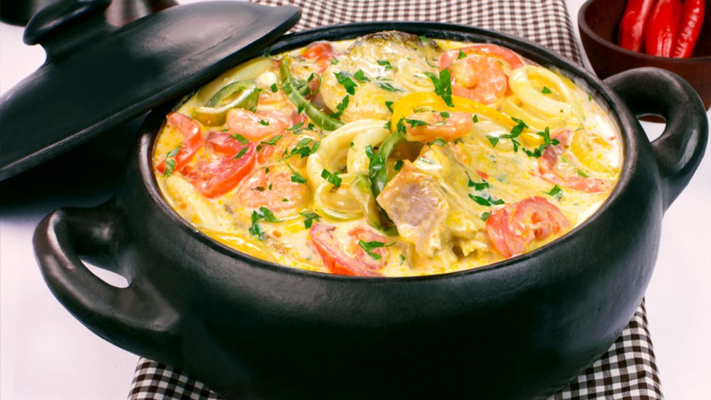

BAHIA
Vatapá
Cremoso prato com camarão, pão, leite de coco e dendê.
⏱ 45 min
👥 4 porções
Explore receitas autênticas com imagens reais das preparações. Toque em uma receita para ver ingredientes e modo de preparo.
Cremoso prato com camarão, pão, leite de coco e dendê.
Bolinho de feijão fradinho frito no dendê, recheado com vatapá e caruru.

Arroz e feijão verde com queijo coalho e carne seca.
Massa finíssima enrolada com doce de goiaba.

Prato rústico com carne de sol desfiada e pilada com farinha de mandioca, típico do sertão nordestino.

Doce tradicional feito com coco ralado e açúcar, derrete na boca

Carne de sol suculenta acompanhada de macaxeira cozida e manteiga de garrafa, um clássico nordestino.
Bebida típica do Piauí feita com suco de caju clarificado

Peixe cozido no leite de coco e azeite de dendê.